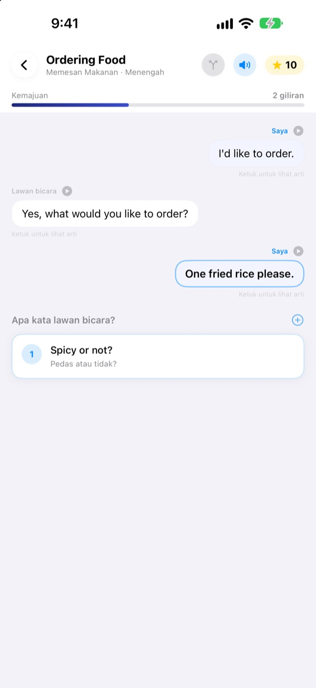
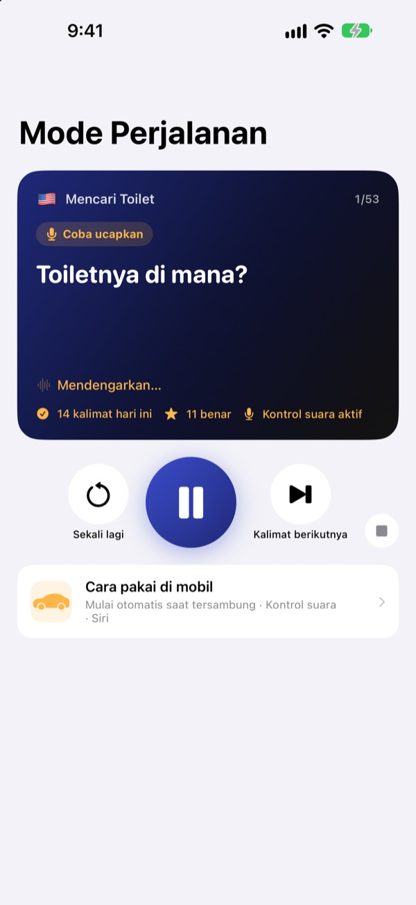
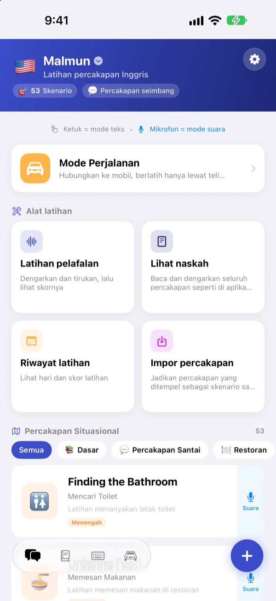
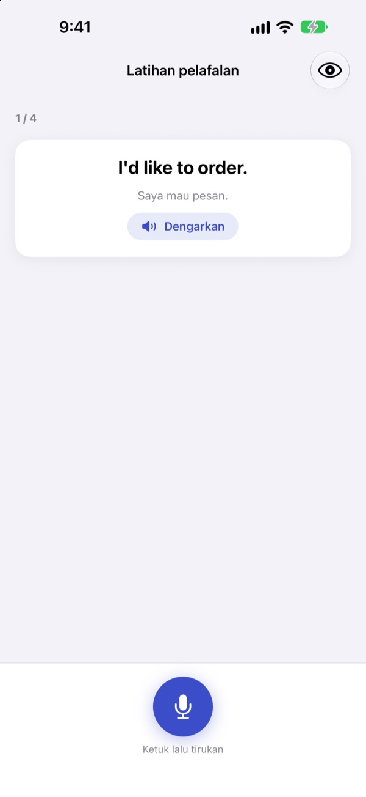

Jangan diam saja.
Mulai duluan.
Malmun adalah aplikasi latihan percakapan, dan setiap jawaban yang kamu pilih membawa obrolan ke arah yang berbeda. Belajar bahasa Inggris, Korea, Jepang, Mandarin, atau Spanyol, dan di jalan pulang kerja, latihan cukup dengan telinga dan suara.
Percakapan bercabang, latihan pelafalan, dan kosakata gratis.

Sudah hafal kalimatnya, tapi bingung waktu harus menjawab?
Dialog di buku selalu berjalan sesuai naskah. Lawan bicara di dunia nyata sering menjawab hal yang tidak kamu duga. Malmun mengajakmu menyusuri semua cabang percakapan lebih dulu, jadi apa pun jawabannya, kalimat berikutnya sudah siap. Perjalanan pulang pun jadi waktu latihan.
Latihan lewat telinga sambil menyetir
Mode Perjalanan diputar lewat speaker mobil dengan Bluetooth atau CarPlay. Kamu mendengar artinya dulu, bunyi ding memberi waktu untuk mengucapkannya, lalu jawabannya diputar sekali pelan dan sekali dengan kecepatan normal.
Lanjut dan ulang dengan tombol di setir, atau ucapkan lanjut, ulang, atau pelan saat giliranmu. Pemutaran berhenti sebentar saat navigasi memberi arahan.

Semua situasi untuk liburan dan sehari-hari
Setiap bahasa punya 53 percakapan situasional, mulai dari ungkapan dasar dan obrolan santai sampai restoran, transportasi, bandara, hotel, belanja, wisata, dan keadaan darurat.
Semua bisa didengar, diucapkan, dan dicek pelafalannya.

Pastikan ucapanmu terdengar benar
Latihan pelafalan memberi skor dan menandai dengan warna kata yang sudah tepat dan yang terlewat.
Di Lihat naskah, seluruh percakapan tampil seperti chat. Dengarkan sampai habis, atau sembunyikan artinya untuk menguji diri sendiri.

Mulai dalam tiga langkah
- 1
Pilih bahasa
Ketuk bendera di bagian atas layar utama. Kalimat dan kosakatamu disimpan terpisah untuk setiap bahasa.
- 2
Buka satu percakapan
Ketuk jawaban di mode teks, atau ketuk mikrofon lalu bicara. Mode suara mencarikan jawaban yang paling mirip.
- 3
Di mobil, pakai Mode Perjalanan
Sambungkan ponsel ke mobil lalu tekan putar. Tidak perlu melihat layar.
Kontrol Mode Perjalanan
- Setir: lagu berikutnya
- Kalimat berikutnya
- Setir: lagu sebelumnya
- Kalimat yang sama sekali lagi
- Tombol putar
- Jeda dan lanjutkan
lanjut·berikutnya- Kalimat berikutnya
ulang·sekali lagi- Dengar lagi
pelan·cepat- Ubah kecepatan bacaan
adegan berikutnya- Pindah ke percakapan berikutnya
berhenti·jeda- Berhenti latihan
- Siri: “Mulai latihan perjalanan di Malmun”
- Mulai tanpa menyentuh ponsel
Perintah suara hanya didengar saat giliranmu, setelah bunyi ding. Kalau kalimatnya benar, kamu mendengar “Bagus!”. Kalimat yang sedang diputar muncul di layar pemutaran mobil. Tidak ada layar aplikasi khusus di CarPlay.
Hampir semuanya gratis. Malmun Pro membuka sisanya.
Gratis
- Percakapan situasional: ungkapan dasar dan obrolan santai
- Mode Perjalanan, 3 adegan per hari
- Latihan pelafalan, naskah, impor percakapan, riwayat latihan
- Kalimatku, kartu kosakata, keyboard kalimat
- Berbagi skenario dengan teman, membuat skenario dengan AI
Malmun Pro
- Semua percakapan situasional: restoran, transportasi, bandara, hotel, belanja, wisata, darurat
- Mode Perjalanan tanpa batas
- Berlaku untuk semua bahasa
Langganan tahunan atau sekali bayar seumur hidup
Lihat harganya di aplikasi atau di App Store. Langganan tahunan diperpanjang otomatis kecuali dibatalkan paling lambat 24 jam sebelum periodenya berakhir.
Pertanyaan umum
Bagaimana cara memakainya di mobil?
Sambungkan iPhone ke mobil lewat Bluetooth atau CarPlay, buka Mode Perjalanan, lalu tekan putar. Suara keluar dari speaker mobil dan kalimat yang sedang diputar tampil di Sedang Diputar. Kamu juga bisa bilang ke Siri “Mulai latihan perjalanan di Malmun”, atau sekali saja buat otomatisasi di app Pintasan agar latihan mulai begitu CarPlay (atau Bluetooth mobil) tersambung.
Apakah mikrofon mendengarkan terus?
Tidak. Mikrofon ponsel hanya mendengar saat giliranmu, setelah bunyi ding, dan suaramu diproses di perangkat. Ucapkan perintah dalam bahasa tampilan aplikasi.
Bahasa apa saja yang bisa dipelajari?
Inggris, Korea, Jepang, Mandarin, dan Spanyol. Kalau aplikasi tampil dalam bahasa Indonesia, arti kalimat dan perintah suara memakai bahasa Indonesia, jadi bahasa Indonesia sendiri tidak muncul di daftar pilihan.
Pelafalanku tidak dikenali dengan baik.
Pengenalan suara berjalan dalam bahasa yang sedang kamu pelajari. Coba di tempat yang lebih tenang, dan pastikan pengenalan suara untuk bahasa itu sudah terunduh di perangkatmu.
Bagaimana cara menambahkan keyboard?
Buka Pengaturan ▸ Umum ▸ Papan Ketik ▸ Papan Ketik ▸ Tambah Papan Ketik Baru, lalu pilih keyboard Malmun. Saat mengetik, ketuk tombol bola dunia untuk beralih. Akses Penuh tidak diperlukan. Untuk mengurangi kalimat yang muncul, ketuk ikon keyboard di kanan bawah layar utama ▸ Kelola keyboard.
Skenario yang dibagikan temanku tidak muncul.
Fitur berbagi dengan teman memakai iCloud, jadi kalian berdua harus masuk ke iCloud. Kalau masih belum muncul, tutup aplikasi sepenuhnya lalu buka lagi.
Apa yang dibutuhkan untuk membuat skenario dengan AI?
Masukkan kunci API Anthropic milikmu sendiri di aplikasi dan tulis topiknya, lalu percakapan baru dibuatkan. Fitur lain tetap bisa dipakai tanpa kunci.
Bagaimana cara membatalkan langganan atau minta refund?
Pembayaran diurus oleh Apple. Batalkan di Pengaturan iPhone ▸ Akun Apple ▸ Langganan ▸ Malmun. Untuk refund, ajukan ke Apple di reportaproblem.apple.com.
Ganti iPhone, kok Pro-nya hilang?
Masuk dengan Akun Apple yang sama, lalu di Malmun buka Pengaturan ▸ Malmun Pro ▸ Pulihkan Pembelian.
Di mana data belajarku disimpan?
Tidak perlu akun. Data belajarmu tetap di perangkat dan di iCloud milikmu. Tanpa iklan dan pelacakan, hanya statistik pemakaian anonim dan laporan error yang dikirim. Bug dan permintaan fitur juga bisa ditulis di GitHub Issues (github.com/M1zz/IndonesianSmallTalk/issues).
Ada pertanyaan atau masukan? Kirim ke leeo@kakao.com, lewat Pengaturan ▸ Kirim Masukan di aplikasi, atau Instagram @lee25_ios.